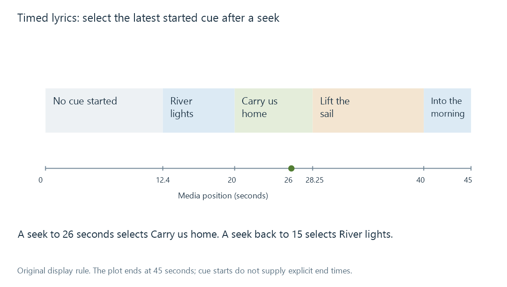
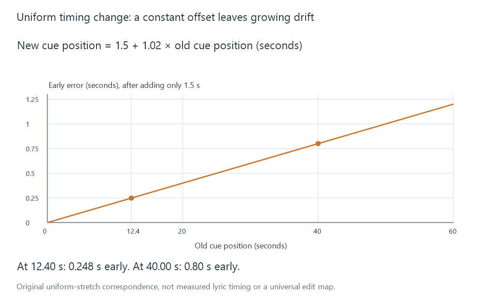

Synchronized lyrics and music timelines
Synchronized lyrics associate text with media-time positions so that a renderer can select the words or lines appropriate to playback.
Synchronized lyrics pair text with positions on a particular recording's media timeline. A renderer can use those positions to show the current line or word, and to recover the correct text after the listener seeks.
The association is with media time, not with the wall clock. Pausing the audio should not make the lyrics run ahead.
Four lines on a timeline
Use this original fictional cue set:
| Media position | Text |
|---|---|
| 12.40 seconds | River lights |
| 20.00 seconds | Carry us home |
| 28.25 seconds | Lift the sail |
| 40.00 seconds | Into the morning |
One simple display model chooses the latest cue whose time is no later than the current media position. Under that rule, position 26 seconds selects Carry us home. Seeking backwards to 15 seconds selects River lights. Before 12.40 seconds, no lyric line has started.

This is an explanatory selection rule, not a claim about a specific app's rendering algorithm. A cue containing only a start time also does not supply an explicit end time. A renderer's policy determines whether it retains the line until the next cue, clears it during silence, or uses additional interval information.
Granularity changes what can be displayed
A line cue says when the line starts. It cannot establish when the second word or final syllable is sung.
Word or syllable timing supplies more detailed boundaries. That enables a karaoke-style progression, but it requires more timing evidence. Dividing the line's duration evenly among its words assumes a rhythm that the performance may not have.
ID3's SYLT frame associates text fragments with timestamps and identifies the timestamp unit. Its definitions distinguish milliseconds from MPEG audio-frame counts. A number stored as frame count cannot be interpreted as milliseconds without conversion.
Plain USLT text has no such timeline. LRC is another timed-text representation, usually encountered as a sidecar.
Playback state supplies the clock
If playback pauses at 26 seconds, the relevant position remains 26 seconds. If the listener resumes, the media clock advances again. If playback speed changes, the lyric positions still identify moments in the recording, while the time needed to reach them changes.
Seeking introduces a direct jump in position. A renderer should resolve the cue from the destination position rather than waiting for every skipped lyric event to arrive.
An output delay can introduce another clock boundary: the reported playback position and the sound heard from an audio device may not be perfectly aligned. A renderer may need an appropriate synchronization policy. Changing the lyric file to compensate for one device's delay can make it wrong on another playback path.
Another recording needs another correspondence
The same words can be sung with a different introduction, tempo or verse sequence. A lyric timeline for one recording is not automatically valid for a live performance or radio edit of the same work.
An extra 1.5-second introduction would call for a constant shift in this simple example:
new cue time = old cue time + 1.5 seconds
Every cue moves by the same amount. But a duration change distributed through the performance creates drift as well.
Imagine a version whose correspondence follows this deliberately simple model:
new cue time = 1.5 + 1.02 × old cue time
At 12.40 seconds, the corresponding time is 14.148 seconds. At 40.00 seconds, it is 42.30 seconds. Adding only 1.5 seconds leaves the first cue 0.248 seconds early and the later cue 0.80 seconds early.

The model assumes a uniform timing change. A live performance with pauses, reordered verses or omitted words needs more detailed correspondence.
Two anchors reveal the uniform change
For two established matching points, the slope is:
(42.30 - 14.148) / (40.00 - 12.40) = 1.02
Subtracting 1.02 × 12.40 from 14.148 gives the 1.5-second intercept. This separates a constant offset from proportional drift rather than trying to correct both with one slider.
Two points do not validate every intermediate verse. Additional matching points can reveal whether the uniform model actually fits or whether a local edit interrupts it.
Emby's supplied-lyrics feature is described in Music Lyrics. The specific file parser and app determine which timing granularity is usable. The underlying correspondence remains recording-specific: the four original lines can be reused as words, while their timing must match the audio actually being played.
See Also
- Unsynchronized lyrics
- LRC lyric files
- Music recordings and track occurrences
- Resume positions and playback timelines
- Subtitle time offsets